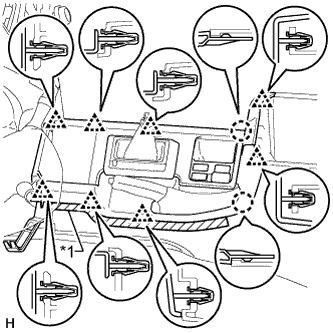

ПЕРЕХОДНИК СТЕРЕОГНЕЗДА В СБОРЕ > СНЯТИЕ |
| 1. ОТСОЕДИНИТЕ ПРОВОД ОТ ОТРИЦАТЕЛЬНОГО ВЫВОДА АККУМУЛЯТОРНОЙ БАТАРЕИ |
| 2. СНИМИТЕ ИНТЕГРИРОВАННУЮ ПАНЕЛЬ УПРАВЛЕНИЯ В СБОРЕ |
Освободите 4 фиксатора.
Отсоедините разъем и снимите интегрированную панель управления в сборе.
| 3. СНИМИТЕ ПОДУШКУ ОТДЕЛОЧНОЙ НАКЛАДКИ ПАНЕЛИ ПРИБОРОВ № 2 |
 |
Наклейте защитную ленту вокруг подушки отделочной накладки панели приборов № 2.
| *1 | Защитная клейкая лента |
С помощью съемника молдингов освободите 5 фиксаторов и снимите подушку отделочной накладки панели приборов № 2.
| 4. СНИМИТЕ ПОДУШКУ ОТДЕЛОЧНОЙ НАКЛАДКИ ПАНЕЛИ ПРИБОРОВ № 1 |
| 5. СНИМИТЕ ЛЕВУЮ ОТДЕЛОЧНУЮ НАКЛАДКУ ПАНЕЛИ ПРИБОРОВ |
 |
Освободите 4 фиксатора и снимите крайнюю отделочную накладку панели приборов.
| 6. СНИМИТЕ ПРАВУЮ ОТДЕЛОЧНУЮ НАКЛАДКУ ПАНЕЛИ ПРИБОРОВ |
 |
Освободите 4 фиксатора.
Отсоедините разъем и снимите крайнюю отделочную накладку панели приборов.
| 7. СНИМИТЕ ПЕРЕДНЮЮ НАКЛАДКУ ВЕРХНЕЙ ОБЛИЦОВКИ ПАНЕЛИ ПОЛА |
 |
Наклейте защитную ленту вокруг передней накладки верхней облицовки панели пола.
| *1 | Защитная клейкая лента |
Освободите 5 фиксаторов.
Отсоедините все разъемы и снимите переднюю накладку верхней облицовки панели пола.
| 8. СНИМИТЕ РУКОЯТКУ РЫЧАГА ПЕРЕКЛЮЧЕНИЯ ПЕРЕДАЧ В СБОРЕ |
 |
Сдвиньте вниз чехол лючка рычага переключения передач.
| *1 | Чехол лючка рычага переключения передач |
Поверните рукоятку рычага переключения передач в направлении, указанном стрелкой, и снимите рукоятку.
| 9. СНИМИТЕ ПАНЕЛЬ КОНСОЛИ В СБОРЕ (для моделей с автоматической трансмиссией) |
|  |
Наклейте защитную клейкую ленту вокруг облицовки панели пола.
| *1 | Защитная клейкая лента |
С помощью съемника молдингов расцепите 8 фиксаторов и 2 захвата.
Отсоедините все разъемы и снимите облицовку панели пола.
| 10. СНИМИТЕ ОБЛИЦОВКУ ПАНЕЛИ ПОЛА В СБОРЕ (для моделей с механической трансмиссией) |
 |
Наклейте защитную клейкую ленту вокруг облицовки панели пола.
| *1 | Защитная клейкая лента |
С помощью съемника молдингов расцепите 8 фиксаторов и 2 захвата.
Отсоедините все разъемы и снимите облицовку панели пола.
| 11. СНИМИТЕ ПЕРЕХОДНИК СТЕРЕОГНЕЗДА № 1 В СБОРЕ (для моделей с автоматической трансмиссией) |
Освободите 2 захвата и снимите переходник стереогнезда.
| 12. СНИМИТЕ ПЕРЕХОДНИК СТЕРЕОГНЕЗДА № 1 В СБОРЕ (для моделей с механической трансмиссией) |
Освободите 2 захвата и снимите переходник стереогнезда.
| 13. СНИМИТЕ ЗАДНЮЮ КОНЦЕВУЮ ПАНЕЛЬ КОНСОЛИ В СБОРЕ |
Ослабьте 4 фиксатора и 4 захвата.
Отсоедините все разъемы и снимите заднюю концевую панель консоли.
| 14. СНИМИТЕ ВИДЕОВЫХОД (ВИДЕОАДАПТЕР) |
 |
Отсоедините разъем.
Освободите зажим и 4 захвата и снимите видеовыход.
| 15. СНИМИТЕ ГНЕЗДО ДЛЯ НАУШНИКОВ |
Отсоедините 2 разъема
Освободите 4 захвата и 2 зажима и снимите 2 выхода для наушников.